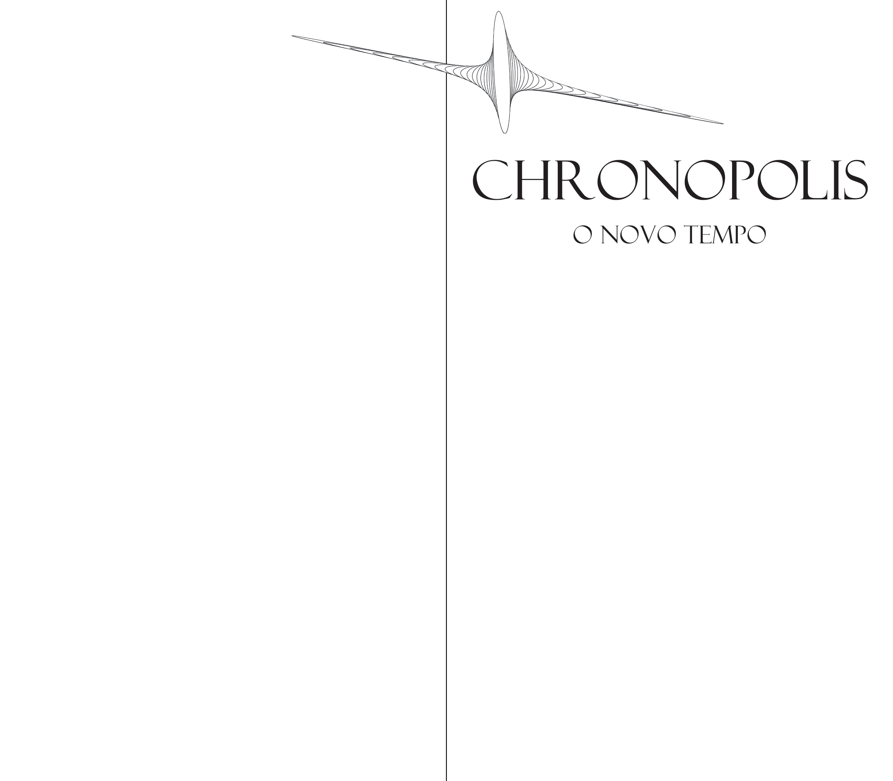

manual de produção
O manual de produção é o registo editorial de todo o processo.
Este foi desenvolvido ao longo da criação do projecto e dedica-se de forma mais profunda a
documentar a adaptação do filme, a construção da ficção, referências/influências bibliográficas e
projectuais, os objetos que veiculam a fição e a síntese conclusiva do projecto.